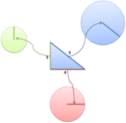

Our world is numbered. Books have ISBNs and products have barcodes. Cars have VINs, even people have social security numbers.
Numbers help us reference items unambiguously. “John Smith” may be many people, but Social Security Number 123-45-6789 refers to one person exactly.
A GUID (globally unique identifier) is a bigger, badder version of this type of ID number. You may see the term UUID tossed about (universally unique identifier), a nitpicky word for those whose numbers are unique not only within the globe, but throughout the entire universe.
Any way you title it, GUIDs or UUIDs are just big, gigantic ID numbers.
The Problem With Counting
“We don’t need no stinkin’ GUIDs,” you may be thinking between gulps of Top Ramen, “I’ll just use regular numbers and start counting up from 1.”
Sure, it sounds easy. Just start with ISBN #1 and add one for each new book. But problems arise:
- Who does the counting? A central authority?
- Who handles simultaneous requests and eliminates duplicates?
- Can IDs be shared between products? Is Social Security Number 1 different from ISBN 1?
- Can people guess what the next ID will be? How many IDs have been issued?
The problem with counting is that we want to create ID numbers without the management headache.
GUIDs to the Rescue
GUIDs are large, enormous numbers that are nearly guaranteed to be unique. They are usually 128 bits long and look like this in hexadecimal:
30dd879c-ee2f-11db-8314-0800200c9a66
The format is a well-defined sequence of 32 hex digits grouped into chunks of 8-4-4-4-12. This gives us 2^128 or about 10^38 numbers.
Here’s the thinking behind GUIDs:
If you pick a huge random number (39 digits long), it’s really unlikely that someone will pick the same one.
GUIDs are not tied to a product. A GUID can be used for people, cars, files, webpages, colors, anything. With regular registration numbers, you start counting at 1 and numbers can overlap. Social Security Number 123-45-6789 is different from ISBN 123456789 which is different from barcode 123456789. This isn’t an issue with GUIDs.
It’s up to the person reading the GUID to figure out the context of the GUID. There are so many GUIDs that you can use them to number everything and not run out.
GUIDs give you a unique serial number that can be used on any item in the universe.
The Great GUID Shortage
When learning about GUIDs, it feels like 39 measly digits aren’t enough. Won’t we run out if people get GUID-crazy, assigning them for everything from their pets to their favorite bubble gum flavor?
Let’s see. Think about how big the Internet is: Google has billions of web pages in its index. Let’s call it a trillion (10^12) for kicks. Think about every wikipedia article, every news item on CNN, every product in Amazon, every blog post from any author. We can assign a GUID for each of these documents.
Now let’s say everyone on Earth gets their own copy of the internet, to keep track of their stuff. Even crazier, let’s say each person gets their own copy of the internet every second. How long can we go on?
Let me say that again. Each person gets a personal copy of the internet, every second, for a billion years.
It’s a mind-boggling amount of items, and it’s hard to get our heads around it. Trust me, we won’t run out of GUIDs anytime soon. And if we do? We’ll start using GUIDs with more digits.
Using GUIDs
If you want to create GUIDs, try the
- Online GUID Generator
- GUID libraries for PHP, Perl, Ruby, Python, .NET
- usesguid plugin for Ruby on Rails: Use a GUID instead of an integer as a primary key in your database.
There are several ways to create GUIDs (RFC 4122 describes the conventions), but you want to avoid that mess and use a library. The general types of GUIDs are:
- Random: Just use the system’s random-number generator to create a 128-bit number.
- Time-based: Create a GUID based on the current time.
- Hardware-based: Make a GUID with certain portions based on hardware features, such as the MAC address of a network card. This isn’t great because the GUID isn’t “anonymous” and can be partially traced to the machine that created it.
- Content-based (MD5 or SHA-1 hash of data): Create a GUID based on a hash of the file contents. Files with the same contents will get the same GUID. You can also seed the hash with a unique namespace (like your URL).
You can mix-and-match techniques above. If you want duplicate files to have the same GUID, then use GUIDs based on the contents. If you want GUIDs to be unique, even if the contents are the same, then create them randomly or with a combination of file contents and a random number.
GUID Examples
Here’s a few things you can do with GUIDs:
- Unique primary key in databases. This lets database items created on separate machines be merged later without conflict, and without the need for a central server to manage IDs.
- Unique filename for uploaded files. If each version of the file gets its own GUID, you can set a long cache expiration time.
- Unique name for resources (del.icio.us URL for instacalc: http://del.icio.us/url/6c5ff0ed608e75724df94a52b05dd6a8)
- Allow vendors to create and register unique IDs without contacting a central authority (like class IDs in COM)
The Tradeoffs with GUIDs
Like most things in life, GUIDs have benefits and drawbacks. Weigh the features to see if they make sense:
Pros:
- No central authority: You avoid the need for management, but can’t keep track of what’s been assigned. A compromise is to generate GUIDs internally and then hand them out.
- Easily combined: You can merge sets of GUIDs from different data sources with a microscopic chance of conflict.
Cons:
- Appear random: Users cannot easily guess the ID for an object they don’t know. This is good for security, difficult for debugging.
- GUID overhead: GUIDs are an example of the time-space tradeoff. You save time in merging but have to use space to store the large (16-byte) GUID. It may not make sense to have a 16-byte GUID keeping track of a 4-byte item in your database.
GUIDs are not a GUARantee
There’s one giant caveat for GUIDs: collisions are still possible.
First, the birthday paradox shows us the chance of a collision as GUIDs are used. It’s very, very unlikely that GUIDs will collide, but as more are assigned, there are fewer left to choose from.
Second, a malicious user could try hijacking GUIDs that he knows will be used (assuming the user can assign their own GUIDs), or resubmitting different content to a previous GUID (submitting file A under the hash of file B).
If you are writing software, program defensively and detect cases where the GUID already exists. Give the user an error or even better, recover, create a new GUID on the server side and try again. GUIDs are great, but they aren’t a magic bullet.
As always, we’re never done learning. Read more about GUIDs here:
- A Universally Unique IDentifier (UUID) URN Namespace
- Coding Horror: Primary Keys vs. GUIDs
- Wikipedia on GUIDs and UUIDs
Join Over 450k Monthly Readers

Enjoy the article? There's plenty more to help you build a lasting, intuitive understanding of math. Join the newsletter for bonus content and the latest updates.